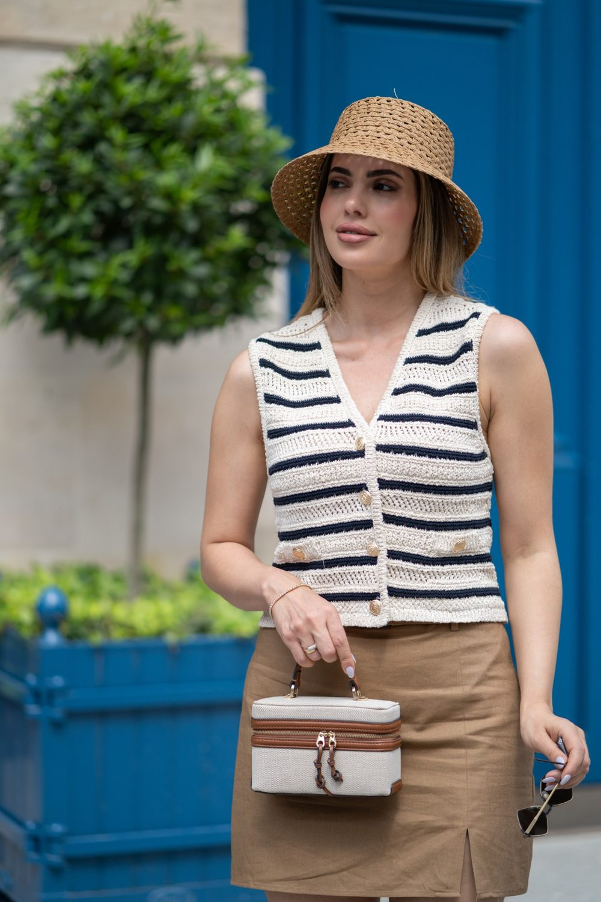

Portrait solo à Paris 9e
Théâtral, doré, avec des passages et des cafés. Un portrait de vous, pour vous : un beau jour, une envie, un cap passé. Une séance solo se vit comme une promenade où vous reprenez la place centrale. Nous vous proposons de commencer à Rue des Martyrs, puis de poursuivre à Square d'Orléans.

Où faire votre shooting
Un portrait solo à Paris 9e peut suivre la Rue des Martyrs, le Passage Jouffroy et le Square d'Orléans, comme une promenade dont vous êtes le sujet central. Sur la Rue des Martyrs, vous marchez entre les étals, un café à la main, sans pose figée. Dans le Passage Jouffroy, les vitrines anciennes encadrent un portrait plus graphique. Le Square d'Orléans, plus silencieux, accueille quelques images posées et une séquence lente, filmée pendant que vous respirez.
Sur place
Théâtral, doré, avec des passages et des cafés. Les escaliers de l'Opéra se photographient bien tôt le matin avant la foule.
La séance sert aussi pour un book d'artiste, une présence en ligne, un profil de réseaux ou simplement un cadeau pour vous-même. Une courte vidéo façon portrait filmé met en scène votre voix, votre énergie.
Apportez deux tenues : une décontractée pour la Rue des Martyrs, une plus habillée pour le Passage Jouffroy. Le changement peut se faire dans un café du quartier. Un rendez-vous en fin de matinée en semaine vous laisse plus d'espace dans la galerie.
À Paris 9e, vous êtes à Métro Opéra, Chaussée d'Antin, Pigalle : nous préparons l'itinéraire entre les lieux avec vous.
Nos lieux pour cette séance
Rue des Martyrs
Boulangeries, fromageries et étals. Une rue au caractère affirmé pour un portrait urbain et naturel.
Square d'Orléans
Cour résidentielle calme et arborée.
Opéra Garnier
Façade dorée et escalier monumental. Une grande façade ou un monument pour un portrait plus graphique.
Passage Jouffroy
Galerie couverte du XIXe siècle.


Avant de nous écrire
Où faire un shooting portrait solo à Paris 9e ?
Pour un shooting portrait solo à Paris 9e, nous proposons un parcours entre la Rue des Martyrs pour le naturel, le Passage Jouffroy pour un style rétro, et le Square d'Orléans pour des images calmes. Le parcours se fait à pied.
Je ne suis pas à l'aise devant l'objectif, une séance solo à Paris est-elle adaptée ?
Oui, une séance solo à Paris 9e est pensée comme une balade, sans pose imposée. Sur la Rue des Martyrs, vous marchez et parlez, et nous photographions entre deux échanges. La gêne disparaît souvent après quelques minutes.
Comment venir à Paris 9e ?
Métro Opéra, Chaussée d'Antin, Pigalle. Nous nous déplaçons avec notre matériel photo et vidéo.
Faut-il savoir poser ?
Non. Nous vous donnons des gestes simples et des idées de mouvement.
Parlons de votre mariage
Demander un devisSolo ailleurs en Île-de-France
© Le Couple Photographe · Photographe de mariage Paris & Île-de-France · Mis à jour le 10 octobre 2026
Demander un devis